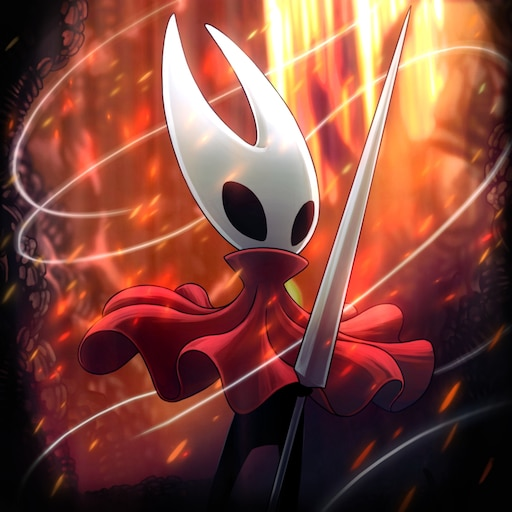
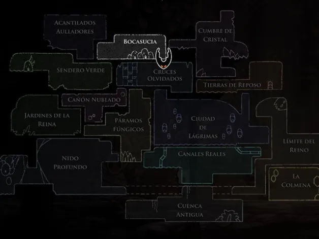
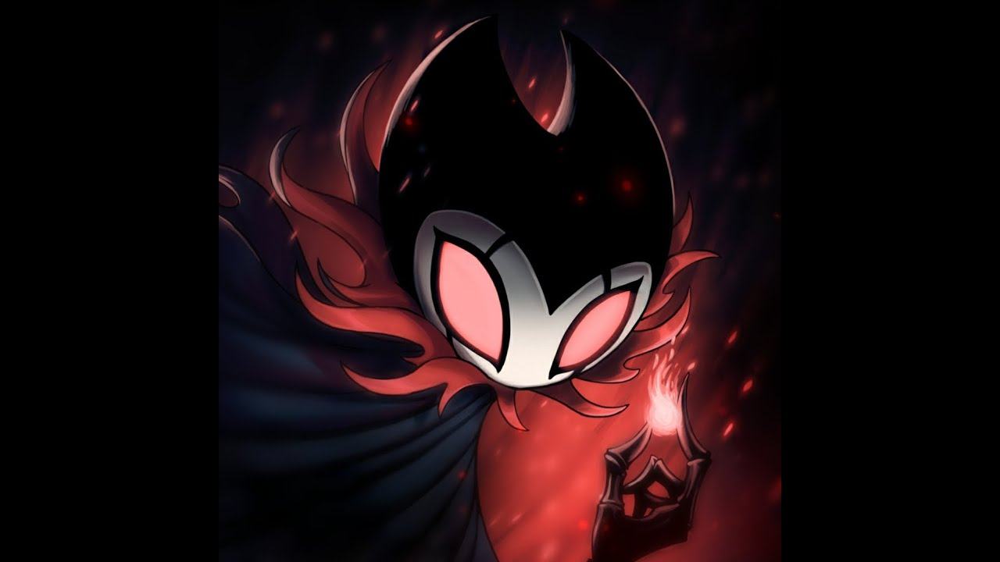
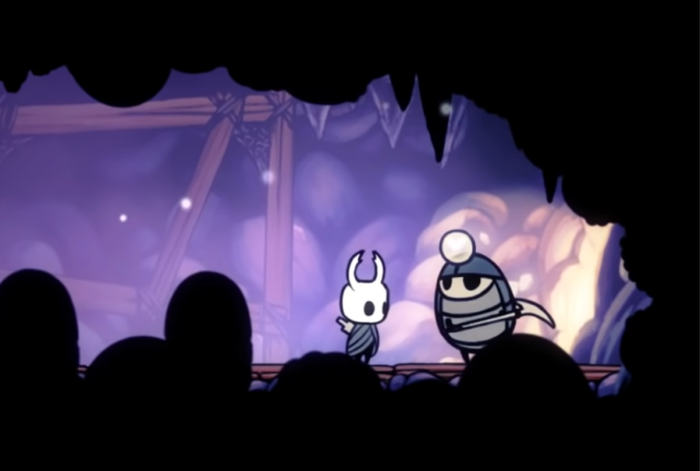
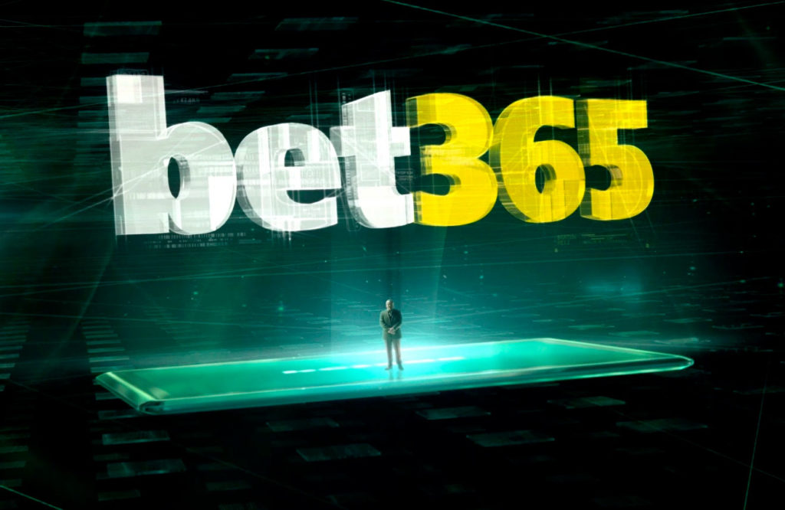
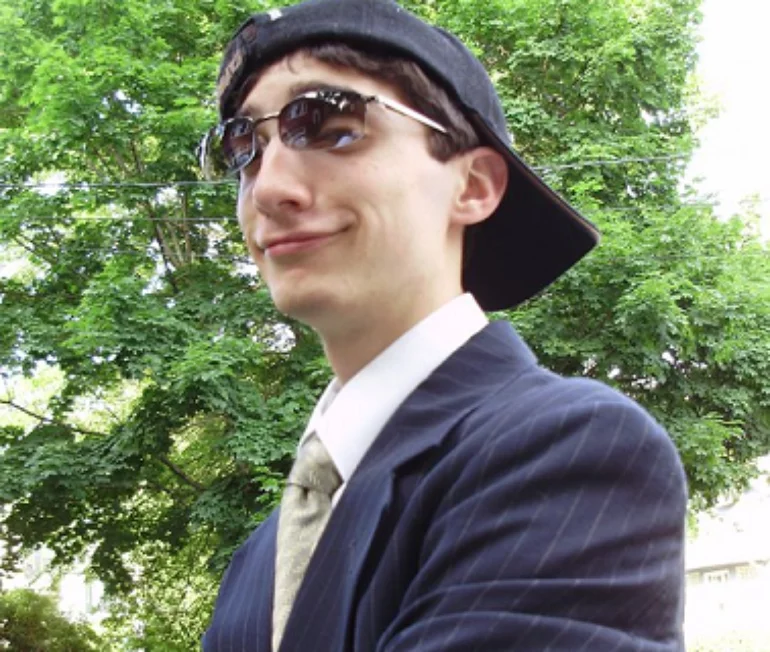
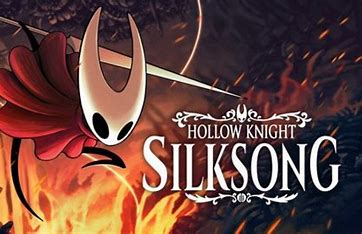

Curiosidade sobre Hollow Knight
"Hollow Knight" é conhecido por sua rica narrativa, atmosfera envolvente e detalhes bem cuidados. Aqui estão algumas curiosidades e easter eggs presentes no jogo:
- Nomes dos Personagens: Muitos personagens em "Hollow Knight" têm nomes que fazem referência a insetos e outros elementos da natureza. Por exemplo, o protagonista, "The Knight", é chamado de "O Cavaleiro" em português, enquanto outros personagens como "Hornet" (Vespa), "Quirrel" (Esquilo) e "Grubfather" (Pai das Larvas) também seguem essa temática.
- Assinatura do Desenvolvedor: O símbolo da equipe de desenvolvimento, Team Cherry, pode ser encontrado em diversos lugares no jogo, como em alguns dos cenários e na abertura do jogo, entre outros locais.
- Mapa de Hallownest: Ao adquirir a habilidade "Mapa do Mestre Cartógrafo", você pode notar que o mapa completo de Hallownest é na verdade a forma do próprio protagonista, The Knight.
- Os Cavaleiros Devotos: No Poço dos Desafios, você pode encontrar estátuas representando os Cavaleiros Devotos que tentaram enfrentar o desafio antes do protagonista. Essas estátuas são na verdade outros jogadores que morreram durante suas tentativas.
- Grimm Troupe e Dark Souls: A expansão "Grimm Troupe" apresenta um personagem chamado "Troupe Master Grimm", que se assemelha ao estilo sombrio da série de jogos "Dark Souls", que também influenciou a atmosfera de "Hollow Knight".
- Diálogos Opcionais: Alguns diálogos com personagens mudam dependendo das suas ações no jogo. Por exemplo, se você derrotar Hornet na Cidade das Lágrimas antes de enfrentá-la na Cidade de Dirtmouth, seu diálogo será diferente.
- Memorial de Myla: Após a morte de Myla, você pode encontrá-la como um inimigo chamado "Myla, a Canção Desolada" nas Minas Cristalinas. Isso é um toque emocional que reflete a tragédia da personagem.
- Quebra da Quarta Parede: Em uma das salas no Pântano Verdejante, você pode encontrar uma estátua de um personagem parecido com um jogador segurando uma espada e usando um headset, que é uma pequena quebra da quarta parede.




Esses são apenas alguns exemplos das muitas curiosidades e easter eggs presentes em "Hollow Knight". O jogo é repleto de detalhes que tornam a exploração de Hallownest uma experiência fascinante e imersiva.

AD

Clique aqui para ver nossa entrevista com Toby Fox!
